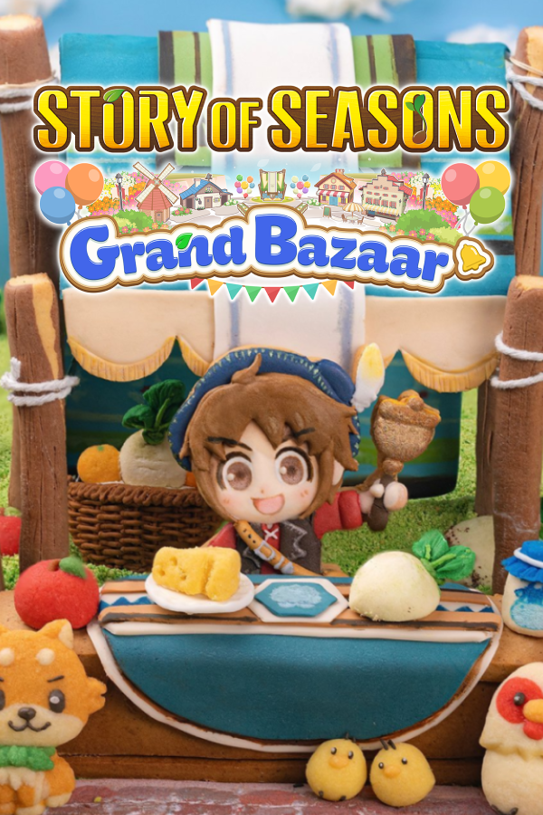

Game profile

Story of Seasons: Grand Bazaar
Every archived year-end list appearance, including placement and points earned.
About the Game
Searching for a peaceful farm life, a fresh mountain breeze, and your own market stall? Look no further than the friendly community of Zephyr Town! Here you’ll grow crops and raise animals, get to know the locals, and sell your wares at the town's bazaar to restore it to its former glory.
| Released | 2025-08-27 |
|---|---|
| Developer | Marvelous |
| Publisher | XSEED Games, Marvelous USA, Marvelous Europe |
| Genres | Simulation, Casual |
| Platforms | PC, Nintendo Switch |
SingleplayerSteam AchievementsSteam CloudPartial Controller SupportAnimeCharacter CustomizationFamily FriendlyCuteColorfulCraftingSteam Trading CardsRelaxing
Where to Buy
Game information provided by RAWG.
1List appearances
1Years represented
Points by Year
12025 points
List History
| Year | Source | List | Placement | Points |
|---|---|---|---|---|
| 2025 | Polygon | The 50 best games of 2025, as chosen by Polygon | 41 | 1 |